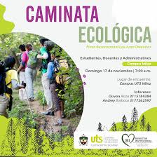
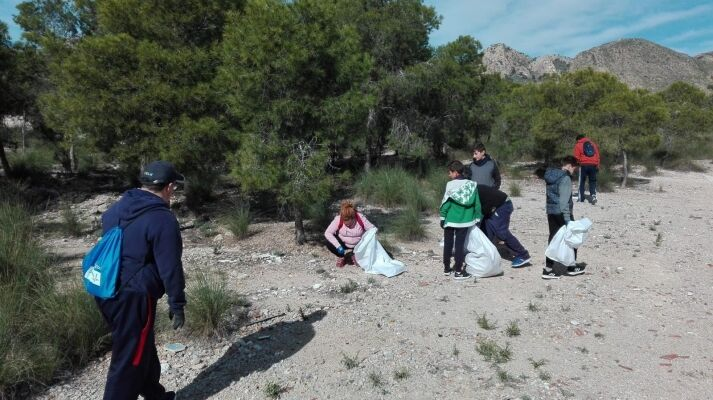
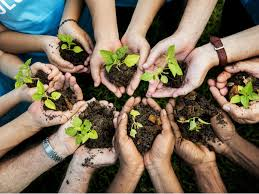
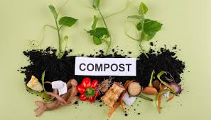
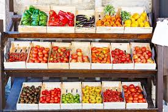

Descubre nuestras Actividades
Encuentra y participa en actividades diseñadas para fomentar la sostenibilidad, proteger el medio ambiente y conectar con la naturaleza. ¡Elige tu favorita y contribuye al cambio!
Actividades Disponibles

Actividad: Caminata Ecológica
Recorre impresionantes senderos naturales mientras aprendes sobre biodiversidad y conservación del entorno.

Actividad: Limpieza de Monte
Únete a nosotros para recoger residuos y preservar las áreas verdes de nuestra región.
Actividad: Cocina Sostenible
Aprende a preparar platos deliciosos usando productos de temporada y técnicas ecológicas.

Actividad: Plantación de Árboles
Participa en la reforestación de bosques locales para restaurar ecosistemas y luchar contra el cambio climático.

Actividad: Taller de Compostaje
Conviértete en un experto en compostaje y descubre cómo reciclar residuos orgánicos de manera efectiva.

Actividad: Mercado Ecológico
Visita un mercado local con productos ecológicos y sostenibles para apoyar a pequeños productores.